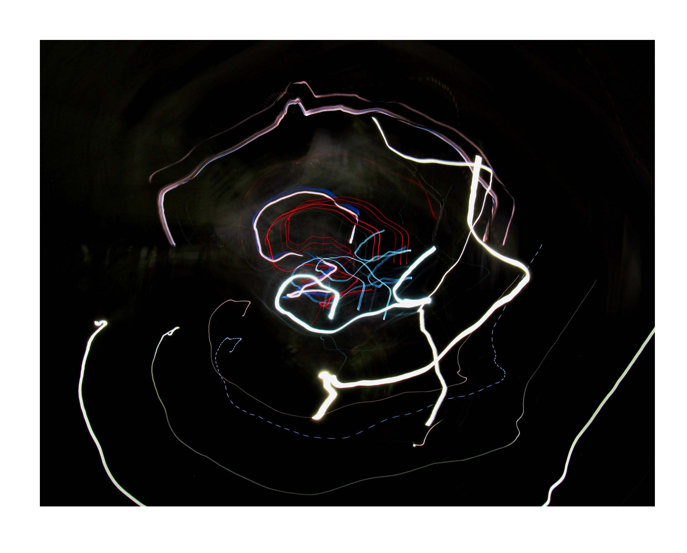
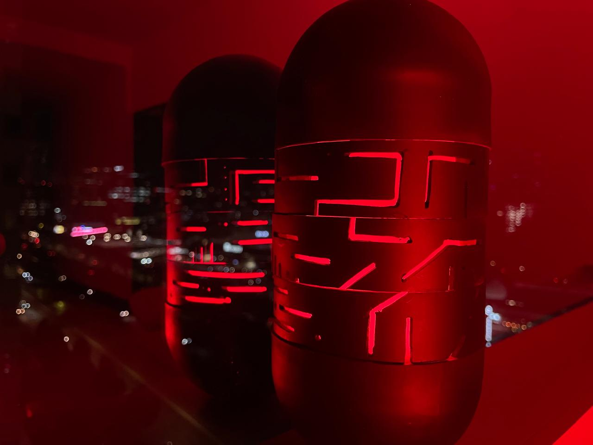
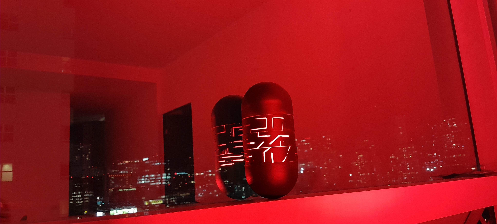

<!DOCTYPE html>
<html lang="en">
  <head>

    <head>
      <meta charset="UTF-8">
      <meta name="viewport" content="width=device-width, initial-scale=1.0">
      <title>Color de Fondo</title>
  </head>
  <body style="background-color: #fdabcd ;">
      
  </body>
  </html>
    

    <title>TANIA PORTAFOLIO</title>

    <meta charset="utf-8" />
    <meta name="viewport" content="width=device-width, initial-scale=1" />

    <style>
      @import url('https://fonts.googleapis.com/css2?family=Bebas+Neue&display=swap');
      </style>

    <meta name="author" content="Your name" />
    <meta name="description" content="Brief description" />

    <meta property="og:title" content="Your Page Title" />
    <meta property="og:description" content="Brief description" />
    <meta property="og:image" content="/some-image.png" />
    <meta property="og:url" content="/this-page.html" />
    <meta property="og:site_name" content="Your Site Name" />

    <link href="style.css" rel="stylesheet" />
    <link rel="icon" type="image/svg+xml" href="/favicon.svg" />

    <!-- importar bootstrap  -->
    <link
      href="https://cdn.jsdelivr.net/npm/bootstrap@5.3.3/dist/css/bootstrap.min.css"
      rel="stylesheet"
      integrity="sha384-QWTKZyjpPEjISv5WaRU9OFeRpok6YctnYmDr5pNlyT2bRjXh0JMhjY6hW+ALEwIH"
      crossorigin="anonymous"
    />
    <script
      src="https://cdn.jsdelivr.net/npm/bootstrap@5.3.3/dist/js/bootstrap.bundle.min.js"
      integrity="sha384-YvpcrYf0tY3lHB60NNkmXc5s9fDVZLESaAA55NDzOxhy9GkcIdslK1eN7N6jIeHz"
      crossorigin="anonymous"
    ></script>
    <!-- fin importacion bootstrap  -->
  </head>

  

  

      </div>

      <section class="introduccion">
        <style>
          section {
              margin-bottom: 20px; /* Añade espacio de 20px debajo de cada sección */
              padding: 10px; /* Añade un poco de espacio dentro de la sección */
              background-color: #ffc1c1; /* Color de fondo para ver las secciones */
          }
      </style>

        <h1> Tania Quiroz </h1>
        <p> Soy estudiante de diseño en la Universidad Autónoma Metropolitana Unidad Cuajimalpa.

          Me interesa formar parte de proyectos creativos relacionados con diseño de producto, diseño de espacios, diseño de experiencia de marca, o similares.
          
          Me considero una persona creativa con habilidades de comunicación y trabajo en equipo, facilidades para aprender nuevas habilidades que se requieran. </p>
        <h3> Experiencia</h3>
        <p>  He realizado proyectos en la Universidad relacionados a:
          Diseño de identidad gráfica
          Diseño de sistemas de información
          Diseño y manufactura con equipos de control numérico como róuter CNC, corte láser, impresión 3D, plotter, plotter de corte.
          Curso de sketch
          Diseño de información en los espacios, recorridos, señalética </p>
        <h3> Proyectos </h3>
        <p>  He realizado proyectos en la Universidad relacionados a:
          Diseño de identidad gráfica
          Diseño de sistemas de información
          Diseño y manufactura con equipos de control numérico como róuter CNC, corte láser, impresión 3D, plotter, plotter de corte.
          Curso de sketch
          Diseño de información en los espacios, recorridos, señalética </p>


        <h3> Software  </h3>
        <p>  He realizado proyectos en la Universidad relacionados a:
          Diseño de identidad gráfica
          Diseño de sistemas de información
          Diseño y manufactura con equipos de control numérico como róuter CNC, corte láser, impresión 3D, plotter, plotter de corte.
          Curso de sketch
          Diseño de información en los espacios, recorridos, señalética </p>


     

        
       
        
        
        
        
        

        

        </section>


        

    </nav>


    <div class="row"> 

      <h1> Proyectos </h1>
      <style>
        section {
            margin-bottom: 50px; /* Añade espacio de 20px debajo de cada sección */
            padding: 100px; /* Añade un poco de espacio dentro de la sección */
            background-color: #f3fbac; /* Color de fondo para ver las secciones */
        }
    </style>


      <div class="col col-4">
        <style>
          section {
              margin-bottom: 50px; /* Añade espacio de 20px debajo de cada sección */
              padding: 100px; /* Añade un poco de espacio dentro de la sección */
              background-color: #f3fbac; /* Color de fondo para ver las secciones */
          }
      </style>
  
      <h3> Proyectos </h3>  
        
        
        <p>  He realizado proyectos en la Universidad relacionados a:
          Diseño de identidad gráfica
          Diseño de sistemas de información
          Diseño y manufactura con equipos de control numérico como róuter CNC, corte láser, impresión 3D, plotter, plotter de corte.
          Curso de sketch
          Diseño de información en los espacios, recorridos, señalética </p>

      </div>
        <div class=" col col-4" >
        <h3> Experiencia</h3>
        
        <p>  He realizado proyectos en la Universidad relacionados a:
          Diseño de identidad gráfica
          Diseño de sistemas de información
          Diseño y manufactura con equipos de control numérico como róuter CNC, corte láser, impresión 3D, plotter, plotter de corte.
          Curso de sketch
          Diseño de información en los espacios, recorridos, señalética </p>
      </div>
      <div class="col col-4">
        <h3> Software</h3>
        
        <p>  He realizado proyectos en la Universidad relacionados a:
          Diseño de identidad gráfica
          Diseño de sistemas de información
          Diseño y manufactura con equipos de control numérico como róuter CNC, corte láser, impresión 3D, plotter, plotter de corte.
          Curso de sketch
          Diseño de información en los espacios, recorridos, señalética </p>
      </div>


    </div>
    <div class="container">
      <style> "background-color: #f4f1e9 " </style>
    </div>

    <div class="dropdown">
  <button class="btn btn-secondary dropdown-toggle"
          type="button" id="dropdownMenu1" data-toggle="dropdown"
          aria-haspopup="true" aria-expanded="false">
    Dropdown
  </button>
  <div class="dropdown-menu" aria-labelledby="dropdownMenu1">
    <a class="dropdown-item" href="#!">Action</a>
    <a class="dropdown-item" href="#!">Another action</a>
  </div>
</div>

  </body>
</html>

